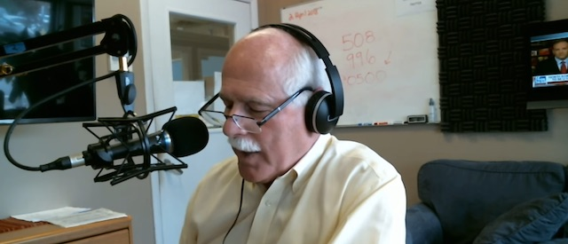
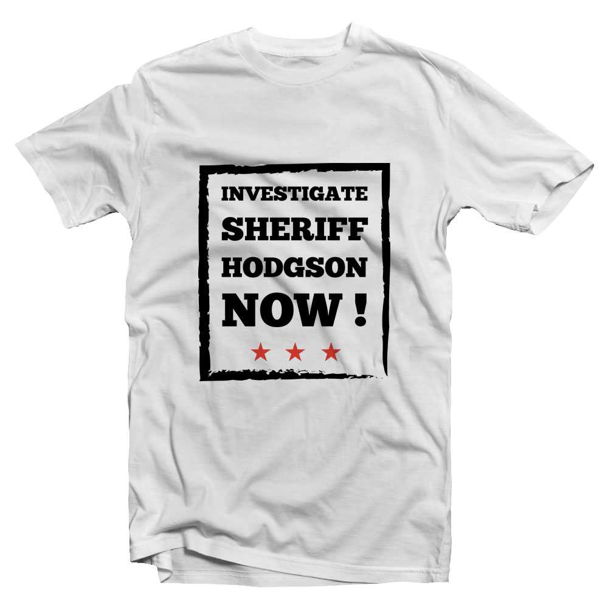

2019-12-24 08:00

Emails were not the only product of the ACLU’s FOIA request to the Bristol County Sheriff’s Office (BCSO). Eventually, the BCSO had to cough up travel documents and Tweets as well.
When the ACLU asked for Twitter records from accounts @Sheriff_Hodgson and @BCSO1, the Sheriff’s Office initially tried to avoid producing the documents by changing the account handles to @SheriffHodgson and @BristolSheriff. But ACLU counsel threatened to sue. So the BCSO responded like grownups with grainy, low-quality screenshots of a surprisingly small number of private communications.
But rather than discussing programs for rehabilitating his prisoners — surprise! — Hodgson’s private Tweets were almost all about scheduling media appearances to spread his anti-immigrant gospel and to market his own “brand.” And the many free media opportunities Hodgson was (and is) given to develop his “brand” represent nothing more than unreported “in-kind” campaign contributions.
The majority of Hodgson’s Tweets were to and from local radio station WBSM 1420, which features mainly right-wing bloviators like Barry Richard, Ken Pittman, Howie Carr, and Chris McCarthy. And they were all from radio host Chris McCarthy — whose job it is to feed Hodgson stories to comment on:
Tom should see this ASAP (23 Jan 2017)
McCarthy strokes Hodgson’s ego by comparing him to the president:
The Sheriff and you as his media person changed the national conversation in the way only a President can usually move an issue. Tremendous job. (28 Mar 2017)
McCarthy passes along an article by Howie Carr lambasting acting U.S. Atty. William Weinreb for Hodgson to read:
Jonathan- Howie wanted to make sure TH saw this column (4 May 2017)
McCarthy then directs Hodgson to an interview he did with Michele McPhee, who has just been a guest on his show — before he discusses it with Hodgson:
J - I interviewed Michele McPhee about her book on the Marathon Bombing yesterday. She discusses UMass Dartmouth and the bombing and I hope you can share this with Tom. She names a UMD professor. (15 May 2017)
We learn that, besides Jonathan Darling, BCSO legislative liaison Brock Cordeiro also handles Hodgson’s media work. Hodgson does not simply do radio interviews, he has a radio schedule:
Hi Chris, I’m out of the office this week. Brock is handling this stuff and has his radio schedule for the next few days. Give him a hollar at brockcordeiro@bcso-ma.org or send him a facebook message. Good luck — Jonathan (23 Jun 2017)
At Hodgson’s request, Darling suggests to McCarthy that he give Hodgson a regular spot on his show:
Hi Chris, Congrats on the new show. Sheriff asked me to get in touch. He mentioned you wanted him to come on sometime. Right now, our best bet is a call in tomorrow or an in-studio on Tuesday or Wednesday. Also, if you want to set something regular up, say every Friday or every other Wednesday or the first Thursday of the month or whatever, we’re open to that as well. — Jonathan (3 Jan 2018)
McCarthy acknowledges the amount of work they do together:
Jonathan - we do enough together to have you call or text me - my number is 781-308-5662 - send me a text when you have a moment so we can communicate rapidly when needed. Thanks
Remember those unreported “in-kind” campaign contributions.
Sometimes McCarthy tries to elicit information or get Hodgson to speculate on local politics:
Thanks - I’m hearing the same thing. I understand the Commies at the Coalition for Social Justice are going to run SEIU organizer Lisa Lemieux in the special. (2 Feb 2017)
and
Off the record: Have you heard anything about Jill Ussach running for the open NB Ward 3 CC seat? (2 Feb 2017)
Darling replies:
Hi Chris, Consensus of some of the clued-in folks around here is she’s no doubt interested, but if she actually pulls the papers and runs is another story.
In another Tweet Darling refers McCarthy to an order form for a t-shirt a local group produced for its visit to the governor to lobby for an investigation into Hodgson’s abuses:
Hey Chris. Tom wanted me to send this to you: He can’t wait to get a t-shirt: bccjustice.wordpress.com/2018/09/29/baker-is-the-new-orange (1 Oct 2018)

But Hodgson is a self-appointed expert on everything from Iran to marijuana. Darling offers Hodgson as an anti-marijuana spokesman:
Hi Chris. Sheriff was interviewed by the herald today about that stoned kid who hit the school bus in Gloucester. Just wanted to let you and the other radio guys know he’s available to take the anti-weed side if anyone’s interested. Thanks, and merry Christmas. — Jonathan (21 Dec 2016)
At one point McCarthy sends Hodgson a private text about New Bedford City Councilman Hugh Dunn’s letter to the state legislature on marijuana dispensaries — to feed Hodgson answers for a forthcoming interview:
I sent TH a text with the letter NB CC Hugh Dunn sent to the state legislature asking them to change the law on local control. This story is going to be big and I wanted Tom to have all the information in advance of the media. (1 Jun 2017)
Darling replies:
Awesome. Thx Chris. We will be ready for it when it hits. (1 Jun 2017)
Darling sends sheriff A. J. Louderback a photo of himself with Trump — under the assumption Louderback loves vanity photos as much as Hodgson:
Sheriff, I thought this was a nice picture. It’s from the Associated Press from Friday’s meeting. Catch up soon — Jonathan. (14 Jan)
Darling sends McCarthy a Tweet thanking him for Hodgson’s chance to vent on his favorite topics:
Hi Chris, just wanted to follow up and say thanks for having the Sheriff on this morning. Trump, immigration, Elizabeth Warren … he was in heaven. Anytime you want to chat again on Herald of BSM, just drop us a line …. thanks, Jonathan (1 Dec 2016)
McCarthy returns the compliment, sending Hodgson a link to a press release from Hamilton Strategies:
Jonathan, I just spoke with the Sheriff and scheduled him to call in to Boston Herald radio this Friday morning at 7:20am to discuss this press release: hamiltonstrategies.com/news/open-letter… (14 Dec 2016)
A word on Hamilton Strategies.
Hamilton Strategies advertises itself as a “mission-driven, full-service communications firm serving Christian non-profit organizations” which exists to: “connect ministries with media, engage Christians in the culture and inspire all to share the miracle of Jesus Christ throughout the world.”
Hamilton Strategies is also a propaganda center for Islamophobia and Homophobia.
McCarthy’s item for discussion is the interfaith celebration of an “Anti-Hate” event at the Islamic Society of Boston. Hamilton Strategies has issued a press release blasting liberal Jews and Christians who attended the event, including Marty Walsh and Elizabeth Warren, and has. accused the Islamic Center of being a “terror-linked, Saudi-funded radical mega-mosque.”
McCarthy also wants to link the Islamic Center with a terror attack [that never happened] on a mall in Attleboro. Once again McCarthy feeds an article to Hodgson like somebody fed SAT answers to Felicity Huffman’s daughter:
There is a section in the press release that mentions a planned machine gun attack on a “mall in Attleboro, MA” which we will be asking about. counterjihad.com/terror-experts… (14 Dec 2016)
The author of the article for discussion is Paul Sperry, part of a “Counter-Jihad” network with connections to every Islamophobic organization in America.
Thanks, ACLU. Keep the FOIA requests coming.